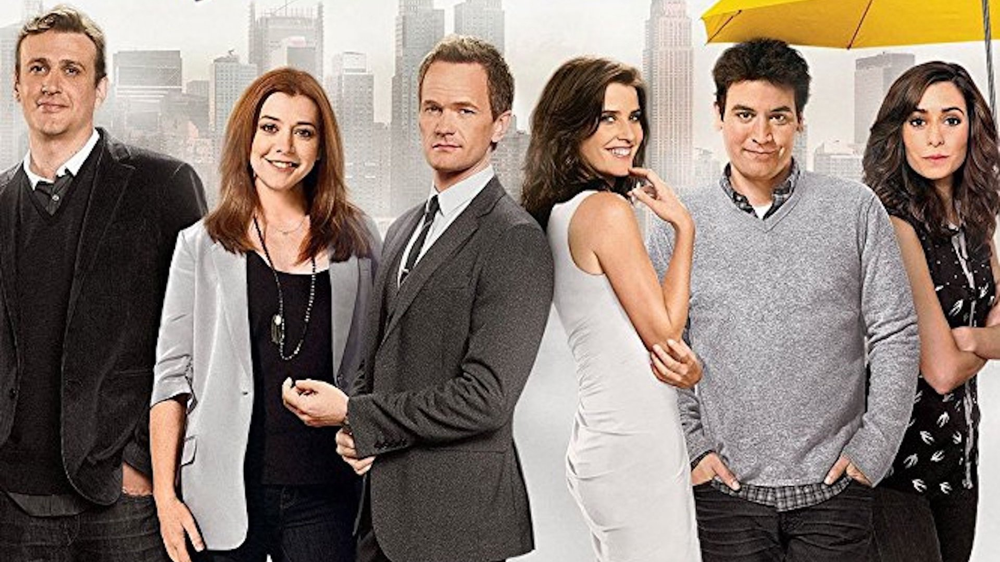
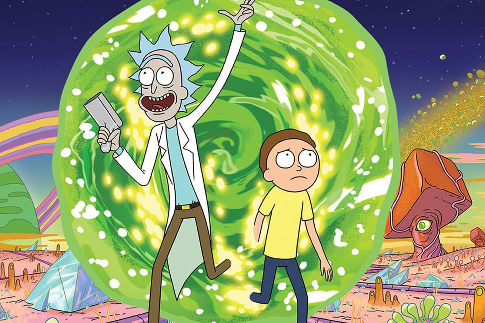
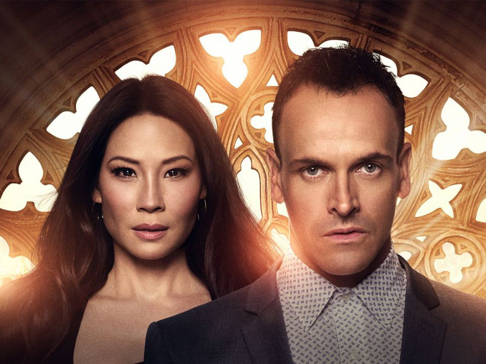
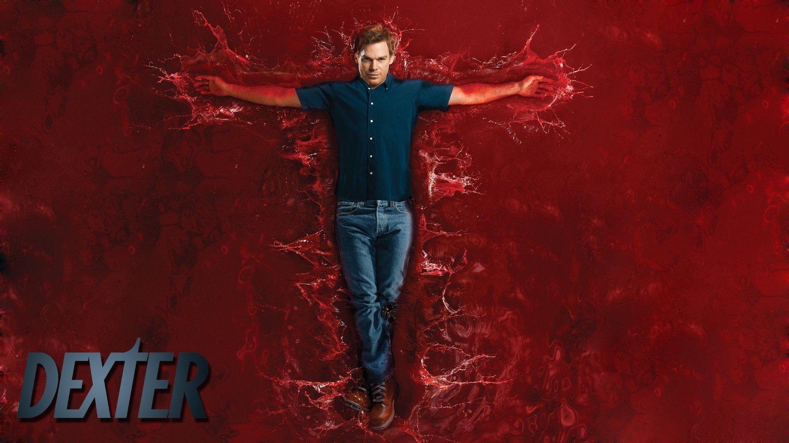
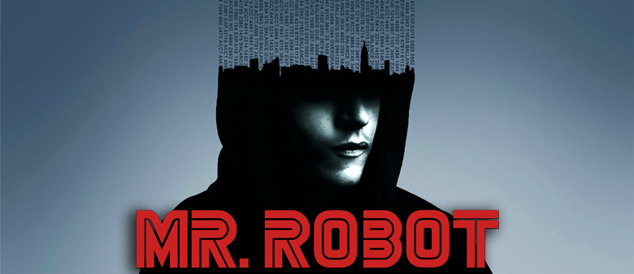
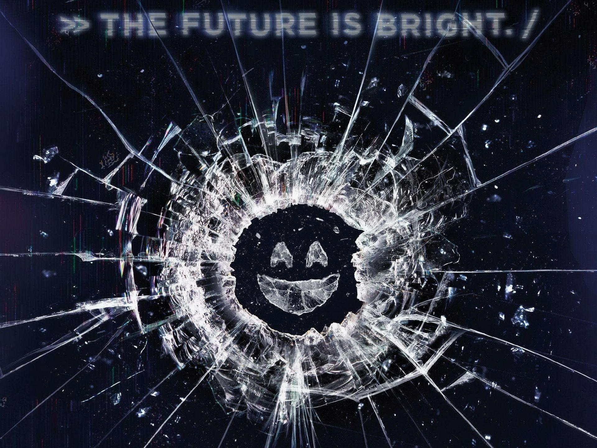
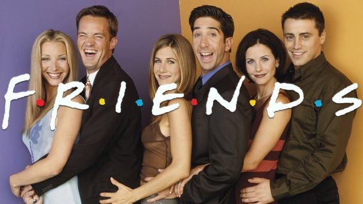

CURIOSIDADES

How I met your mother
- Todos os sites mencionados na série realmente existiram, como por exemplo o PuzzlesTheBar, Barney’s Blog, Ted Mosby Is A Jerk e muitos outros - alguns deles, inclusive, estão no ar até hoje.
- “The Bro Code”, o livro de Barney na série, foi realmente lançado na vida real, assim como o “Playbook”, onde o personagem ensina a conquistar mulheres.
- Todas as cenas com os filhos de Ted foram gravadas na primeira temporada. Então, sim, o final já estava planejado desde o começo!
- No final da segunda temporada, aconteceu um pedido de casamento real entre os figurantes. Tim Russo era amigo de um dos roteiristas do programa, e usou a cena para surpreender sua namorada, Jana Rugan.
- Os personagens de Ted, Marshall e Lily são baseados nos criadores da série, Carter Bays e Craig Thomas, e na sua esposa, Rebecca. Inclusive, ela só permitiu que uma personagem fosse baseada nela com a interpretação de Alyson Hannigan.
- Jim Parsons, que interpretou o famoso Sheldon na série “The Big Bag Theory”, quase foi escalado como Barney na série.

Modern family
- Matt LeBlanc, o Joey de 'Friends'quase foi escalado como Phil Dunphy.
- Julie Bowen a atriz que viveu Claire Dunphy, estava grávida de gêmeos nas gravações do piloto de Modern Family. A produção procurou esconder a barriga de Julie em frente às câmeras colocando sempre algum objeto na sua frente ou no seu colo.
- Na vida real, Nolan Gould é bem diferente de seu personagem. O ator é um gênio de verdade: com um QI de 150 (maior que o de Steve Jobs, que tinha 140, e pouco menor que o de Einstein, com 160), Nolan se formou no Ensino Médio aos 13 anos, começou a faculdade aos 14 e ainda faz parte do Mensa, maior e mais tradicional sociedade de QI alto do mundo.
- Por incríveis oito anos (de 2012 até 2019) a intérprete da divertida Gloria Pritchett, Sofia Vergara, é a atriz mais bem paga da televisão mundial. Com 44,1 milhões de dólares (sem a dedução de impostos), a atriz desbancou mais uma vez no ano passado nomes como Ellen Pompeo, de Grey’s Anatomy, e Kaley Cuoco, de The Big Bang Theory.
- Além de dar vida a Mitchell Pritchett, o ator Jesse Tyler Ferguson também cultiva uma carreira no teatro musical. Jesse fez a sua estreia na Broadway em 1998.

Rick and Morty
- Rick e Morty cresceram a partir de uma paródia de De volta ao futuro: Rick e Morty deriva de uma criação do próprio Justin Roiland, uma série da web chamada The Real Animated Adventures of Doc e Mharti. Lembramos que os personagens de De Volta para o Futuro se chamavam Doc e Marty.
- Dois personagens, uma voz: as vozes de Rick e Morty são interpretadas pela mesma pessoa: Justin Roiland, seu criador.
- O tempo exato que Dan Harmon e Justin Roiland levaram para escrever e moldar o episódio piloto de "Rick e Morty" foi de seis horas. Nem um a mais, nem um a menos. Na verdade, a produção deste capítulo aconteceu no mesmo dia em que conseguiram vender o projeto para o estúdio, o que acrescentou ainda mais pressão.
- O arroto constante de Rick nasceu depois que Justin Roiland arrotou acidentalmente enquanto gravava os vocais para o projeto The Real Animated Adventures of Doc e Mharti. Ele estava imitando as frases do Dr. Brown e Marty McFly e durante uma linha ele arrotou. Ele fez isso de novo por diversão e quando chegou a hora de criar Rick e Morty, ele decidiu usar esse estilo.
- Para dar mais realismo aos arrotos de Rick, os responsáveis pela série se encarregam de gravá-los da forma mais natural possível na frente do microfone: bebem litros de água mineral, cerveja de baixa caloria e refrigerantes antes de entrar no estúdio.

Elementary
- As cenas no telhado de Sherlock cuidando de suas colmeias, são filmadas no telhado do Silvercup Studios em Long Island City.
- Os criadores do programa supostamente fizeram um grande esforço para evitar comparações ou possíveis problemas de direitos autorais com a série britânica Sherlock (2010), que também reconta a história de Holmes em um cenário contemporâneo. Porém uma dica visual que foi incluída como uma referência à série britânica é o lenço de Holmes, que é usado da mesma maneira que em "Sherlock".
- Ao contrário de muitos programas em que as tatuagens de um personagem desempenham um papel importante na história, as tatuagens de Sherlock não são adicionadas por um maquiador, mas pertencem ao ator que o retrata, Jonny Lee Miller. Ao contrário das tatuagens de Holmes, no entanto, as de Miller não são suas.
- O criador Robert Doherty disse que uma de suas motivações para transformar Watson em uma mulher era que ele queria mostrar que homens e mulheres podem "trabalhar e viver juntos e não acabar romanticamente envolvidos".
- Um personagem recorrente na série é o Detetive Bell, um policial brilhante com poderes dedutivos próprios. Esta é uma homenagem ao Dr. Joseph Bell, um médico e professor escocês, conhecido por Sir Arthur Conan Doyle, e o modelo da vida real para Sherlock Holmes.

Dexter
- Embora tenham interpretado irmão e irmã na série, o ator Michael C. Hall e a atriz Jennifer Carpenter casaram-se no dia 31 de Dezembro de 2008. Eles se divorciaram dois anos depois, mas continuaram trabalhando juntos em Dexter.
- Na 1ª temporada, Dexter e Rita assistem ao filme Laços de Ternura (1983), no qual o ator John Lithgow aparece. Este apareceria na série durante a 4ª temporada, no papel de Arthur Mitchell.
- As temporadas 4 e 6 são as únicas a terminar com o protagonista à beira do precipício, em um dilema.
- O nome do barco de Dexter é "Slice of Life", que significa "Pedaço da Vida" em português.
- Enquanto grande parte das séries de TV são localizadas no entorno da cidade de Miami, na Flórida, as exteriores de Dexter são filmadas em Long Beach, na California e as interiores nos estúdios de Sunset-Gower, no Sunset Boulevard. Profissionais de segunda unidade da equipe técnica gravaram um material adicional em Miami para ajudar no realismo do programa.

Mr. Robot
- Nos primeiros dois episódios de Mr. Robot, existe um arquivo no computador de Elliot com o título "Sadly" ("infelizmente" em português). Desde então esse arquivo desapareceu de uma forma misteriosa
- O nome do grupo "F Society", significa na realidade "Fun Society" ("Sociedade Divertida" em português)
- Os vídeos da "F Society" são baseados em vídeos reais do grupo de hackers Anonymous
- O grupo de hackers Anonymous aprovou a série e na realidade existem alguns membros do grupo trabalhando nas gravações da série
- O ator Rami Malek achava que a máscara dos membros da "F Society" era muito parecida com a mascote do jogo Monopólio para ser levada a sério

Peaky Blinders
- Sabemos que Peaky Blinders está disponível no catálogo da Netflix como uma aquisição da marca original. No entanto, originalmente, a série estreou no canal BBC — até aí, tudo bem, são duas janelas de exibição que podem oferecer aos espectadores todos os episódios na íntegra. No entanto, a Netflix e a BBC têm diferentes trilhas sonoras para a série, sendo as músicas muito parecidas, mas não as mesmas.
- Cillian Murphy foi uma das melhores escolhas da equipe de produção para o protagonista, Thomas Shelby, também chamado de Tommy. É notável perceber que Murphy utiliza diversos objetos de cena ao seu favor todas as vezes em que aparece. Ele sempre está fumando, interagindo com papéis, livros, relógios, entre outros objetos que ajudam na construção de seu personagem, e tudo isso é bastante sugestivo aos espectadores.
- Uma das coisas mais chamativas em Peaky Blinders é a questão dos figurinos. Eles contrastam de uma forma única com a narrativa e fornecem elementos visuais interessantes, já que a produção é recheada de violência, e as vestimentas trazem um certo requinte para a tela. Todos os figurinos de Tommy, por exemplo, não fogem à linha preta, branca e cinza.
- Além de referências estilísticas de enquadramento dos personagens, a série também faz o uso de elementos mais subliminares para relembrar os espectadores de diversos filmes de máfia, como O Poderoso Chefão, dirigido por Francis Ford Coppola. Uma dessas referências está ligada à laranja, a fruta indica que alguma morte está por vir no filme de Coppola.
- Os atores Finn Cole e Joe Cole são irmãos na vida real. Os intérpretes de Michael Gray e John Shelby, respectivamente, são muito parecidos, inclusive. E Finn só conseguiu o papel na série graças ao seu irmão, que já estava escalado para o elenco de Peaky Blinders.

La Casa de Papel
- La Casa de Papel virou um nome icônico entre os fãs. Porém, o título não fazia parte dos planos originais do criador Álex Pina. Inicialmente, a produção teria o nome de Los Desahuciados ("Os Desajustados," na tradução livre) - essa escolha era baseada no começo da história dos personagens, responsáveis por deixar tudo para trabalhar com Professor (Álvaro Morte).
- Durante entrevista à Esquire, Pina revelou como reescreveu final da série 33 vezes. "Tínhamos uma ideia de como íamos continuar. Normalmente, no início, apenas sabemos como é o fim. Mas no caso da quinta parte, nosso planejamento original para os capítulos finais não funcionou realmente, e precisávamos mudar radicalmente o último capítulo," revelou.
- Ao invés de terem nomes de cidades famosas, esse não era o intuito original de Álex Pina. "Tínhamos algumas ideias, entre elas, nomes de planetas. Um dia, alguém apareceu com uma camiseta com a palavra 'Tokyo' e foi assim que tudo começou. Imagine se tivéssemos ficado com a ideia dos nomes de planetas, os heróis de La Casa de Papel seriam Urano, Mercúrio e Júpiter," afirmou
- Uma empresa de tecnologia na Índia resolveu dar aos funcionários um dia de folga para todos assistirem à estreia da primeira parte da quinta e última temporada do seriado da Netflix. A companhia em questão é Verve Logic. O "feriado" do dia 3 de setembro de 2021 funcionará somente para quem trabalha no estabelecimento.
- A narração de Tóquio é um dos elementos mais marcantes da série, mas quase ficou de fora. A personagem não era a primeira escolha dos produtores, que pensaram em colocar o Professor e até Moscou (Paco Tous) para contar a história.

Black Mirror
- Em uma entrevista para o Channel 4, do Reino Unido, em dezembro de 2017, o criador da série, Charlie Brooker, falou o motivo pelo qual escolheu chamar o seriado de Black Mirror. “O que eu quis dizer com isso”, ele disse. “É que quando uma tela está desligada – a tela parece com um espelho preto.“
- Além do elenco que conta com celebridades e atores renomados, a produção de Black Mirror também recebeu grandes estrelas na criação e direção de alguns episódios novos encomendados pela Netflix. Um deles é o Arkangel, que foi dirigido pela atriz e diretor Jodie Foster. Outro é Nosedive, que foi escrito por Rashida Jones e Michael Schur, da renomada sitcom Parks and Recreation.
- Em uma entrevista para o The Hollywood Reporter, Charlie Brooker confirmou que tem a intenção de fazer outro episódio interativo de Black Mirror, no mesmo estilo de Bandersnatch: “Enquanto estávamos filmando, falávamos ‘Não vamos fazer isso nunca mais’. E, depois, acho que assim como um parto, você esquece a dor e quer fazer uma segunda vez!“
- Além do episódio Hang the DJ, da 4ª temporada, a 5ª também estreou com a promessa de ser mais otimista. Em uma entrevista para o The New York Times em dezembro de 2018, o criador da série, Charlie Brooker, disse que a quinta temporada terá “episódios e histórias mais otimistas, em vez de apenas distopias.”
- Como a série está na Netflix, muita gente pensa que ela pode ser maratonada. Mas, de acordo com Charlie Brooker, não é nem um pouco indicado assistir todos os episódios de uma vez – mesmo que o “próximo episódio começa em 15 segundos” seja tentador demais.

Friends
- É difícil imaginar a série sem o sexteto, mas, a princípio, os protagonistas seriam apenas quatro: Monica (Courteney Cox), Ross (David Schwimmer), Joey (Matt LeBlanc) e Rachel (Jennifer Aniston). Assim, segundo o Comedy Central britânico, Chandler (Matthew Perry) e Phoebe (Lisa Kudrow) originalmente apareceriam em um ou outro episódio.
- Vários artistas famosos fizeram participações em “Friends”, mas a de Bruce Willis foi a mais inusitada. Isso porque o ator de “Duro de Matar” só aceitou participar da série porque perdeu uma aposta para Matthew Perry.
- Uma das apresentadoras mais famosas do mundo, Ellen DeGeneres passou bem perto de entrar para o elenco de “Friends”. A artista foi a primeira convidada para interpretar Phoebe, mas recusou o papel.
- Uma das personagens mais icônicas da TV, Rachel quase não existiu da forma que a conhecemos. Isso porque, Jennifer Aniston já estava escalada para outra série de comédia e a única forma de ela conseguir participar de “Friends” era com o cancelamento deste outro projeto. Foi o que acabou rolando e permitiu que ela pudesse ser a Rachel.
- Um dos momentos mais emblemáticos do personagem é a cena do casamento com Emily (Helen Baxendale), em que ele erra o nome da noiva no altar e a chama de Rachel. O que muita gente não sabe é que isto foi um erro de gravação.